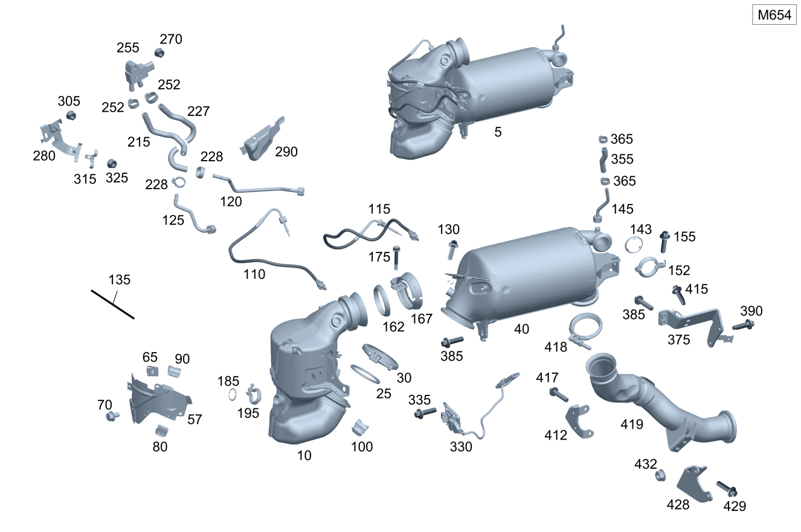

| № | Артикул | Название | Кол. | Примечание |
|---|---|---|---|---|
| 5 | A 654 140 35 01 | Трубка выпуска ОГ (EXHAUST GAS LINE) | 1 | |
| 5 | A 654 140 13 01 | Трубка выпуска ОГ (EXHAUST GAS LINE) | 1 | |
| 5 | A 654 140 14 02 | Трубка выпуска ОГ (EXHAUST GAS LINE) | 1 | |
| 10 | A 654 140 00 13 | Трубка выпуска ОГ (EXHAUST GAS LINE) | 1 | Катализатор |
| 10 | A 654 140 79 02 | Трубка выпуска ОГ (EXHAUST GAS LINE) | 1 | Катализатор |
| 10 | A 654 140 18 01 | Трубка выпуска ОГ (EXHAUST GAS LINE) | 1 | Катализатор |
| 10 | A 654 140 83 02 | Трубка выпуска ОГ (EXHAUST GAS LINE) | 1 | Катализатор |
| 10 | A 654 140 37 01 | Трубка выпуска ОГ (EXHAUST GAS LINE) | 1 | Катализатор |
| 10 | Q 0000000001 | ВАЖНАЯ ИНФОРМАЦИЯ | 1 | Деталь не поставляется, заказывать сборную деталь |
| 10 | A 654 140 03 13 | Трубка выпуска ОГ (EXHAUST GAS LINE) | 1 | Катализатор |
| 10 | A 654 140 82 02 | Трубка выпуска ОГ (EXHAUST GAS LINE) | 1 | Катализатор |
| 25 | Q 0000000001 | ВАЖНАЯ ИНФОРМАЦИЯ | 1 | Деталь не поставляется, заказывать сборную деталь |
| 25 | A 274 142 00 80 | Полуметал. уплотнение (METAL-SOFT-MATERIAL SEAL) | 1 | Катализатор к сажевому фильтру |
| 30 | A 000 995 36 33 | Проф. хомут сист. вып. ОГ (PROFILE CLAMP, EXH. SYS.) | 1 | Катализатор к сажевому фильтру |
| 30 | Q 0000000001 | ВАЖНАЯ ИНФОРМАЦИЯ | 1 | Деталь не поставляется, заказывать сборную деталь |
| 40 | A 654 140 22 01 | DIESEL PARTICULATE FILTER | 1 | Сажевый фильтр |
| 40 | A 654 140 22 01 | DIESEL PARTICULATE FILTER | 1 | Сажевый фильтр |
| 40 | A 654 140 38 01 | DIESEL PARTICULATE FILTER | 1 | Сажевый фильтр |
| 40 | Q 0000000001 | ВАЖНАЯ ИНФОРМАЦИЯ | 1 | Деталь не поставляется, заказывать сборную деталь |
| 40 | A 654 140 04 15 | Трубка выпуска ОГ (EXHAUST GAS LINE) | 1 | Сажевый фильтр |
| 57 | A 654 142 03 20 | Экран защитный (SCREENING PLATE) | 1 | К катализатору |
| 57 | A 654 142 60 00 | Экран защитный (SCREENING PLATE) | 1 | К катализатору |
| 57 | A 654 142 03 20 | Экран защитный (SCREENING PLATE) | 1 | К катализатору |
| 57 | A 654 142 03 20 | Экран защитный (SCREENING PLATE) | 1 | К катализатору |
| 65 | A 004 994 14 45 | SPRING NUT (SPRING LOCK NUT) | 3 | Экран к катализатору; M6 |
| 65 | A 004 994 14 45 | SPRING NUT (SPRING LOCK NUT) | 1 | Экран к катализатору; M6 |
| 70 | N 000000 004310 | Винт с 6-гранной головкой (HEXAGON HEAD BOLT) | 1 | Экран к катализатору; M6X10 |
| 70 | N 000000 004310 | Винт с 6-гранной головкой (HEXAGON HEAD BOLT) | 1 | Экран к катализатору; M6X10 |
| 80 | A 000 991 02 71 | Скоба (CLAMP) | 5 | К экрану; 18X19 MM |
| 80 | A 000 991 02 71 | Скоба (CLAMP) | 5 | К экрану; 18X19 MM |
| 80 | A 000 991 02 71 | Скоба (CLAMP) | 5 | К экрану; 18X19 MM |
| 80 | A 000 991 02 71 | Скоба (CLAMP) | 5 | К экрану; 18X19 MM |
| 80 | A 008 988 84 78 | Скоба (CLAMP) | 1 | К кронштейну каталитического нейтрализатора ОГ; 18 X 14 MM |
| 90 | A 012 988 14 78 | Крепежная скоба (FASTENING CLIP) | 1 | К теплозащитному экрану (верхн.) |
| 90 | A 012 988 14 78 | Крепежная скоба (FASTENING CLIP) | 1 | К теплозащитному экрану (верхн.) |
| 100 | A 008 988 84 78 | Скоба (CLAMP) | 1 | К кронштейну каталитического нейтрализатора ОГ; 18 X 14 MM |
| 100 | A 008 988 84 78 | Скоба (CLAMP) | 1 | К кронштейну каталитического нейтрализатора ОГ; 18 X 14 MM |
| 110 | A 000 905 96 04 | Датчик температуры (TEMPERATURE SENSOR) | 1 | перед каталитическим нейтрализатором ОГ |
| 110 | A 000 905 96 04 | Датчик температуры (TEMPERATURE SENSOR) | 1 | перед каталитическим нейтрализатором ОГ |
| 115 | A 000 905 97 04 | Датчик температуры (TEMPERATURE SENSOR) | 1 | Перед сажевым фильтром |
| 115 | A 000 905 97 04 | Датчик температуры (TEMPERATURE SENSOR) | 1 | Перед сажевым фильтром |
| 120 | A 654 140 06 55 | Напорный трубопровод (PRESSURE LINE) | 1 | Перед сажевым фильтром |
| 120 | A 654 140 06 55 | Напорный трубопровод (PRESSURE LINE) | 1 | Деталь не поставляется, заказывать сборную деталь |
| 125 | A 654 140 01 55 | Напорный трубопровод (PRESSURE LINE) | 1 | Перед сажевым фильтром |
| 125 | A 654 140 01 55 | Напорный трубопровод (PRESSURE LINE) | 1 | Деталь не поставляется, заказывать сборную деталь |
| 130 | N 000000 000276 | Винт с 6-гр. глвк (HEXALOBULAR SCREW) | 2 | Катализатор к сажевому фильтру; M8X20 |
| 130 | N 000000 000276 | Винт с 6-гр. глвк (HEXALOBULAR SCREW) | 2 | Катализатор к сажевому фильтру; M8X20 |
| 135 | A 205 540 89 87 | Электрический жгут (ELECTRICAL WIRING HARNESS) | 1 | Кабель-адаптер |
| 135 | A 205 540 86 87 | Электрический жгут (ELECTRICAL WIRING HARNESS) | 1 | Кабель-адаптер |
| 143 | A 654 142 19 80 | Прокладка, однослойная (METAL SEAL, SINGLE LAYER) | 1 | Между сажевым фильтром и трубопроводом рециркуляции ОГ |
| 143 | A 654 142 19 80 | Прокладка, однослойная (METAL SEAL, SINGLE LAYER) | 1 | Между сажевым фильтром и трубопроводом рециркуляции ОГ |
| 145 | A 654 140 11 55 | Напорный трубопровод (PRESSURE LINE) | 1 | От сажевого фильтра к датчику давления |
| 145 | A 654 140 11 55 | Напорный трубопровод (PRESSURE LINE) | 1 | От сажевого фильтра к датчику давления |
| 152 | A 003 995 04 02 | Трубн. хомут сист.вып. ОГ (PIPE CLAMP, EXHAUST SYS.) | 1 | От сажевого фильтра к трубке рециркуляции ОГ |
| 155 | A 003 990 47 03 | Винт Torx External (HEXALOBULAR HEAD SCREW) | 1 | От сажевого фильтра к трубке рециркуляции ОГ; M6X25 |
| 162 | A 000 492 00 00 | Упл. кольцо вып. системы (SEALING RING) | 1 | Катализатор к турбонагнетателю |
| 167 | A 000 995 89 02 | Трубн. хомут сист.вып. ОГ (PIPE CLAMP, EXHAUST SYS.) | 1 | Катализатор к турбонагнетателю |
| 175 | A 000 990 46 37 | Винт с 6-гр. глвк (HEXALOBULAR SCREW) | 1 | Катализатор к турбонагнетателю; M8X40 |
| 185 | A 000 492 01 56 | Профильное уплотнение (PROFILE SEAL) | 1 | |
| 195 | A 000 995 58 33 | Хомут, двухсоставный (PROFILE CLAMP, TWO-PIECE) | 1 | |
| 215 | A 213 492 07 00 | Шланг выпускной системы (EXHAUST GAS HOSE) | 1 | Перед сажевым фильтром |
| 215 | A 213 492 45 00 | Шланг выпускной системы (EXHAUST GAS HOSE) | 1 | Перед сажевым фильтром |
| 227 | A 213 492 44 00 | Шланг выпускной системы (EXHAUST GAS HOSE) | 1 | После сажевого фильтра |
| 228 | A 000 995 60 10 | Хомут для шланга (HOSE CLAMP) | 2 | |
| 252 | A 003 997 87 90 | Хомут для шланга (HOSE CLAMP) | 2 | К датчику давления; 13.5 MM |
| 252 | A 003 997 87 90 | Хомут для шланга (HOSE CLAMP) | 2 | К напорному трубопроводу; 13.5 MM |
| 255 | A 000 905 53 07 | Датчик давления (PRESSURE SENSOR) | 1 | |
| 255 | A 000 905 65 03 | Датчик давления (PRESSURE SENSOR) | 1 | |
| 270 | A 000 990 43 37 | Шестигранная гайка (HEXAGON NUT) | 1 | Датчик давления сажевого фильтра; M6 |
| 280 | A 213 492 03 00 | Держатель (HOLDER) | 1 | Датчик давления |
| 290 | A 213 492 04 00 | Термозащитный экран (HEAT SHIELD) | 1 | К кронштейну датчика давления |
| 305 | A 000 990 43 37 | Шестигранная гайка (HEXAGON NUT) | 1 | Держатель к держателю; M6 |
| 315 | A 246 492 06 41 | Держатель (HOLDER) | 1 | Шланг выпускной системы |
| 325 | A 000 990 43 37 | Шестигранная гайка (HEXAGON NUT) | 1 | Держатель к держателю; M6 |
| 330 | A 000 905 31 19 | Датчик NOx (NOX SENSOR) | 1 | перед каталитическим нейтрализатором ОГ |
| 335 | N 910143 006001 | Винт с 6-гр. глвк (HEXALOBULAR SCREW) | 2 | Датчик NOX к каталитическому нейтрализатору ОГ; M6X16 |
| 355 | A 654 141 01 04 | Трубка выпуска ОГ (EXHAUST GAS LINE) | 1 | От сажевого фильтра к датчику давления |
| 365 | A 003 997 87 90 | Хомут для шланга (HOSE CLAMP) | 2 | Крепление шлангов выпускной системы; 13.5 MM |
| 365 | A 006 997 18 90 | Хомут для шланга (HOSE CLAMP) | 2 | Крепление шлангов выпускной системы; 13-14.5 MM |
| 375 | A 654 142 41 00 | Держатель (HOLDER) | 1 | Сажевый фильтр к блоку цилиндров |
| 375 | A 654 142 41 00 | Держатель (HOLDER) | 1 | Сажевый фильтр к блоку цилиндров |
| 375 | A 654 142 02 40 | Держатель (HOLDER) | 1 | Сажевый фильтр к блоку цилиндров |
| 375 | A 654 140 04 02 | Держатель (HOLDER) | 1 | Сажевый фильтр к блоку цилиндров |
| 385 | N 000000 000276 | Винт с 6-гр. глвк (HEXALOBULAR SCREW) | 1 | Крепление кронштейна к коробке передач; M8X20 |
| 390 | N 000000 000276 | Винт с 6-гр. глвк (HEXALOBULAR SCREW) | 5 | Держатель к блоку цилиндров; M8X20 |
| 390 | N 910143 008003 | Винт с 6-гр. глвк (HEXALOBULAR SCREW) | 2 | Держатель к блоку цилиндров; M8X30 |
| 390 | N 910143 008003 | Винт с 6-гр. глвк (HEXALOBULAR SCREW) | 2 | Держатель к блоку цилиндров; M8X30 |
| 390 | N 910143 008003 | Винт с 6-гр. глвк (HEXALOBULAR SCREW) | 2 | Держатель к блоку цилиндров; M8X30 |
| 412 | A 654 142 35 00 | Держатель (HOLDER) | 1 | Дополнительный кронштейн сажевого фильтра |
| 415 | N 000000 000276 | Винт с 6-гр. глвк (HEXALOBULAR SCREW) | 2 | Дополнительный кронштейн к кронштейну сажевого фильтра; M8X20 |
| 415 | N 910143 008003 | Винт с 6-гр. глвк (HEXALOBULAR SCREW) | 2 | Дополнительный кронштейн к кронштейну сажевого фильтра; M8X30 |
| 417 | N 000000 000276 | Винт с 6-гр. глвк (HEXALOBULAR SCREW) | 2 | M8X20 |
| 417 | N 000000 000276 | Винт с 6-гр. глвк (HEXALOBULAR SCREW) | 2 | M8X20 |
| 418 | A 000 995 34 33 | Проф. хомут сист. вып. ОГ (PROFILE CLAMP, EXH. SYS.) | 1 | Сажевый фильтр к выпускной трубе |
| 419 | A 213 490 29 01 | Трубопровод ОГ пер. (EXHAUST GAS LINE, FRONT) | 1 | К сажевому фильтру |
| 428 | A 213 492 20 00 | Держатель (HOLDER) | 1 | Выпускная система к коробке передач |
| 429 | N 000000 000276 | Винт с 6-гр. глвк (HEXALOBULAR SCREW) | 2 | Кронштейн к системе выпуска ОГ; M8X20 |
| 432 | N 000000 003175 | Гайка (NUT) | 1 | Держатель к держателю; M8 |
| 432 | N 000000 008303 | Шестигранная гайка (HEXAGON NUT) | 1 | Держатель к держателю; M8 |
| 450 | N 910105 008008 | Винт с 6-гранной головкой (HEXAGON HEAD BOLT) | 2 | Держатель к продольному несущему элементу; M8X16 |
| 480 | N 000000 007953 | Винт с 6-гранной головкой (HEXAGON HEAD BOLT) | 2 | К заднему мосту; M8X25 |
| 530 | A 000 995 30 33 | Проф. хомут сист. вып. ОГ (PROFILE CLAMP, EXH. SYS.) | 1 | Выпускная труба к выпускной трубе сзади |
| 570 | N 000000 008385 | Винт с 6-гр. глвк (HEXALOBULAR SCREW) | 2 | Несущий кронштейн к кузову справа; M8X22 |
| 600 | A 205 490 93 04 | Трубопровод ОГ пер. (EXHAUST GAS LINE, FRONT) | 1 | Спереди |
| 600 | A 205 490 91 04 | Трубопровод ОГ пер. (EXHAUST GAS LINE, FRONT) | 1 | Спереди |
| 600 | A 205 490 90 04 | Трубопровод ОГ пер. (EXHAUST GAS LINE, FRONT) | 1 | Спереди |
| 600 | A 205 490 22 04 | Трубопровод ОГ пер. (EXHAUST GAS LINE, FRONT) | 1 | Спереди |
| 600 | A 205 490 21 04 | Трубопровод ОГ пер. (EXHAUST GAS LINE, FRONT) | 1 | Спереди |
| 610 | A 213 906 86 01 | - Регулятор засл.вып.тракт. (EXH. GAS FLAP CONTROLLER) | 1 | Сервомеханизм заслонки в выпускном тракте |
| 610 | A 213 906 92 10 | - Регулятор засл.вып.тракт. (EXH. GAS FLAP CONTROLLER) | 1 | Сервомеханизм заслонки в выпускном тракте |
| 620 | A 000 998 35 07 | - Демпфирующий элемент (DAMPING ELEMENT) | 1 | Сервомеханизм заслонки |
| 630 | A 000 990 61 37 | - Винт с 6-гр. глвк (HEXALOBULAR SCREW) | 3 | Сервопривод заслонки к трубопроводу ОГ; M6X16 |
| 640 | A 000 492 08 81 | Уплотнительное кольцо (SEALING RING) | 1 | Крепление трубопровода ОГ |
| 640 | A 213 492 15 00 | Упл. кольцо вып. системы (SEALING RING) | 1 | Крепление трубопровода ОГ |
| 640 | A 000 492 08 81 | Уплотнительное кольцо (SEALING RING) | 1 | Крепление трубопровода ОГ |
| 650 | A 002 995 47 02 | Трубн. хомут сист.вып. ОГ (PIPE CLAMP, EXHAUST SYS.) | 1 | Крепление трубопровода ОГ |
| 650 | A 002 995 47 02 | Трубн. хомут сист.вып. ОГ (PIPE CLAMP, EXHAUST SYS.) | 1 | Крепление трубопровода ОГ |
| 650 | A 003 995 01 02 | Трубн. хомут сист.вып. ОГ (PIPE CLAMP, EXHAUST SYS.) | 1 | Крепление трубопровода ОГ |
| 660 | A 213 490 80 04 | Держатель (HOLDER) | 1 | Выпускная система к коробке передач |
| 660 | A 213 490 84 04 | Держатель (HOLDER) | 1 | Выпускная система к коробке передач |
| 670 | A 211 492 05 18 | - Подкладная пластина (SHIM PLATE) | 1 | |
| 675 | N 000000 003175 | - Гайка (NUT) | 2 | Для держателя к сажевому фильтру; M8 |
| 680 | N 000000 000276 | Винт с 6-гр. глвк (HEXALOBULAR SCREW) | 2 | Держатель к картеру гидротрансформатора; M8X20 |
| 685 | N 910105 008005 | Винт с 6-гранной головкой (HEXAGON HEAD BOLT) | 2 | Кронштейн к системе выпуска ОГ; M8X25 |
| 690 | A 000 905 18 18 | Датчик NOx (NOX SENSOR) | 1 | Сзади |
| 695 | A 000 990 43 37 | Шестигранная гайка (HEXAGON NUT) | 2 | Крепление датчика оксидов азота; M6 |
| 700 | A 000 546 20 75 | хомут (CLAMP) | 4 | Крепление провода зонда; 18.0X18.5 MM |
| 710 | A 213 491 83 00 | Держатель (HOLDER) | 1 | К лонжерону |
| 715 | N 910105 008008 | Винт с 6-гранной головкой (HEXAGON HEAD BOLT) | 2 | Держатель к продольному несущему элементу; M8X16 |
| 720 | A 213 490 35 02 | Держатель (HOLDER) | 1 | Трубопровод ОГ |
| 725 | N 000000 003175 | Гайка (NUT) | 1 | Держатель к держателю; M8 |
| 725 | N 000000 008303 | Шестигранная гайка (HEXAGON NUT) | 1 | Держатель к держателю; M8 |
| 730 | A 000 990 97 08 | Самонарезающий винт (SELF-TAPPING SCREW) | 2 | Держатель к креплению кронштейна опоры двигателя слева; M10X22 |
| 790 | A 003 998 63 50 | Пробка (STOP PLUG) | 2 | Уплотнение |
| 795 | A 000 995 30 33 | Проф. хомут сист. вып. ОГ (PROFILE CLAMP, EXH. SYS.) | 1 | Выпускная труба к выпускной трубе сзади |
| 800 | A 205 490 94 01 | Трубопровод ОГ задний (EXHAUST GAS LINE, REAR) | 1 | Сзади |
| 800 | A 205 490 75 01 | Трубопровод ОГ задний (EXHAUST GAS LINE, REAR) | 1 | Сзади |
| 800 | A 205 490 71 03 | Трубопровод ОГ задний (EXHAUST GAS LINE, REAR) | 1 | Сзади |
| 800 | A 205 490 75 01 | Трубопровод ОГ задний (EXHAUST GAS LINE, REAR) | 1 | Сзади |
| 800 | A 205 490 74 03 | Трубопровод ОГ задний (EXHAUST GAS LINE, REAR) | 1 | Сзади |
| 800 | A 205 490 74 03 | Трубопровод ОГ задний (EXHAUST GAS LINE, REAR) | 1 | Сзади |
| 810 | N 000000 008385 | Винт с 6-гр. глвк (HEXALOBULAR SCREW) | 2 | Несущий кронштейн к кузову справа; M8X22 |
| 850 | A 000 905 08 12 | Датчик температуры (TEMPERATURE SENSOR) | 1 | После катализатора |
| 850 | A 000 905 74 07 | Датчик температуры (TEMPERATURE SENSOR) | 1 | После катализатора |
| 850 | A 000 905 07 13 | Датчик температуры (TEMPERATURE SENSOR) | 1 | После катализатора |
| 860 | A 000 541 04 00 | Держатель (HOLDER) | 1 | Датчик температуры |
| 860 | A 642 151 01 40 | Держатель (HOLDER) | 1 | Датчик температуры |
| 860 | A 642 151 01 40 | Держатель (HOLDER) | 1 | Датчик температуры |
| 865 | A 231 492 00 44 | Подвес трубопровода ОГ (SUSPENSION, EXH. GAS LINE) | 1 | Сзади |
| 870 | A 231 492 00 44 | Подвес трубопровода ОГ (SUSPENSION, EXH. GAS LINE) | 2 | Слева и справа |
| 962 | N 910105 008008 | Винт с 6-гранной головкой (HEXAGON HEAD BOLT) | 2 | Держатель к продольному несущему элементу; M8X16 |
| 980 | N 000000 007953 | Винт с 6-гранной головкой (HEXAGON HEAD BOLT) | 2 | К заднему мосту; M8X25 |
| 997 | A 032 545 69 26 | Картер сцепления (CLUTCH HOUSING) | 1 | Заслонка в выпускном тракте A16/53; 6-PIN |
Позиций: 153 · подписано на схемах: 153 · колесо — плавный зум в курсор, перетаскивание — пан, двойной клик — зум, клик по артикулу — скопировать.